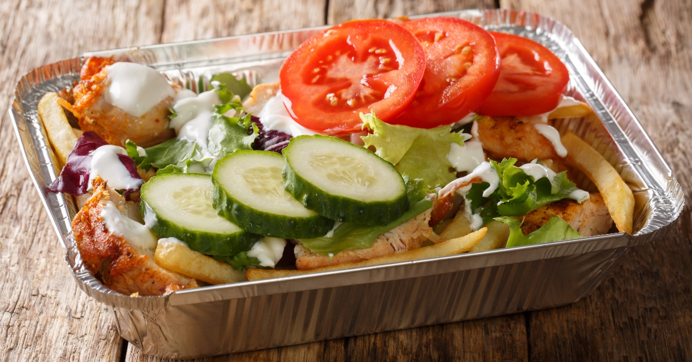

Recipe for Kapsalon

Description
This is a recipe for Kapsalon, a popular Dutch fast food dish. It consists of a layer of fries topped with meat, cheese, and salad, creating a delicious and satisfying meal.
Ingredients
- 500g fries (frozen or homemade)
- 300g shawarma meat (beef, chicken, or lamb)
- 1 tablespoon shawarma seasoning
- 200g grated Gouda or mozzarella cheese
- 1/2 cucumber, sliced
- 1 tomato, chopped
- 1/4 red onion, thinly sliced
- Handful of iceberg lettuce, shredded
- Garlic sauce
- Sriracha or hot sauce (optional)
- Salt and pepper to taste
Steps
- Preheat your oven to 220°C (430°F).
- Prepare the fries according to the package instructions or cook homemade fries until crispy. Set aside.
- In a pan, cook the shawarma meat with the shawarma seasoning over medium heat until fully cooked and slightly crispy.
- In an ovenproof dish, create a layer of fries on the bottom.
- Top the fries with the cooked shawarma meat, spreading it evenly.
- Sprinkle the grated cheese over the meat.
- Place the dish in the preheated oven and bake for about 10 minutes, or until the cheese is melted and bubbly.
- While the Kapsalon is in the oven, prepare the salad by mixing the cucumber, tomato, red onion, and iceberg lettuce in a bowl. Season with salt and pepper.
- Once the cheese is melted, remove the dish from the oven and top it with the fresh salad.
- Drizzle garlic sauce over the salad, and add sriracha or hot sauce if desired.
- Serve immediately and enjoy your homemade Kapsalon!